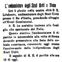

Assente Stella, i migliori cavalli sono Calabresella e Gobba che fanno ben sperare Onda e Selva.
L'Oca manda Picino nel Montone che gira Il Rosso alla Pantera, Zaraballe sostituisce Pioviscola nella Selva, il Bruco preferisce Scansino al Moro che si accorda col Nicchio. La mossa è perfetta, solo l'Oca resta ferma fra i canapi con Sciò nettamente sorpreso da uno scarto del suo barbero.
L'Onda, sfruttando la posizione allo steccato, parte al comando con la favorita Calabresella.
A San Martino passa il testa il Montone, seguono Onda e Nicchio. Al Casato il Nicchio supera l'Onda ed inizia il duello fra Moro e Picino, recupera terreno la Tartuca.
Per i restanti due giri Picino respinge col nerbo gli attacchi del fantino del Nicchio. Al terzo Casato il sauro del Montone ha il guizzo decisivo, il Nicchio non può più nulla e lascia anche la seconda posizione alla Tartuca.
Sesta vittoria per Angelo Meloni detto "Picino", la seconda ottenuta col giubbetto rosa di Via de Servi.
(Da "Daccelo!" di Roberto Filiani)





|